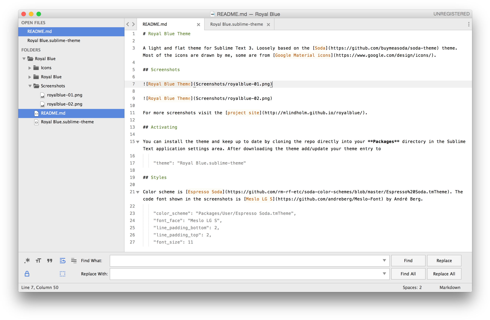
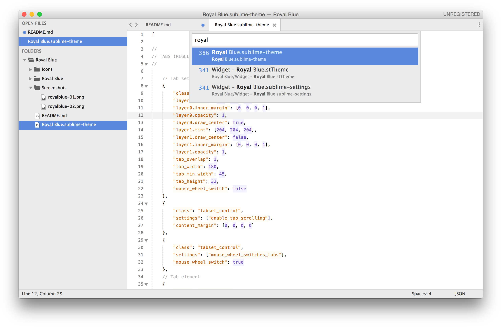
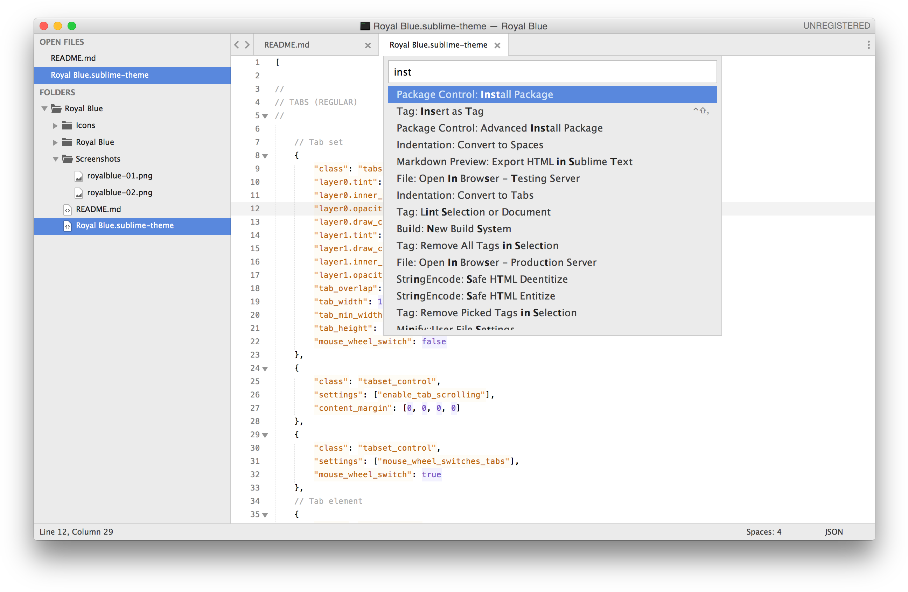
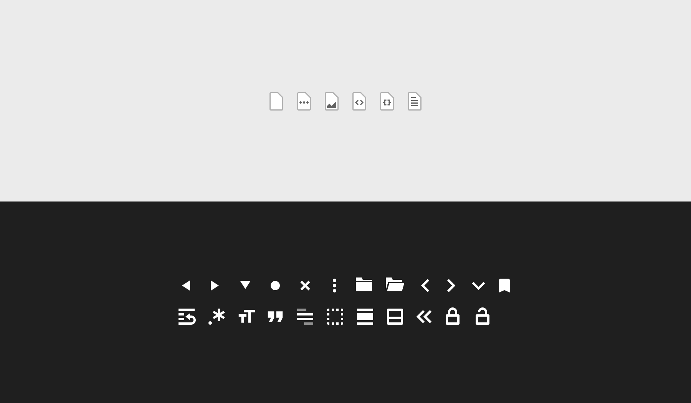

Royal Blue is a light and flat theme for Sublime Text 3. Loosely based on the Soda theme. Most of the icons are drawn by me, some are from Google Material icons.
The color scheme used is Espresso Soda. The code font shown in the screenshots is Meslo LG S by André Berg.
Default view
Find & Replace
Goto Anything Panel
Command Palette

Custom Icons